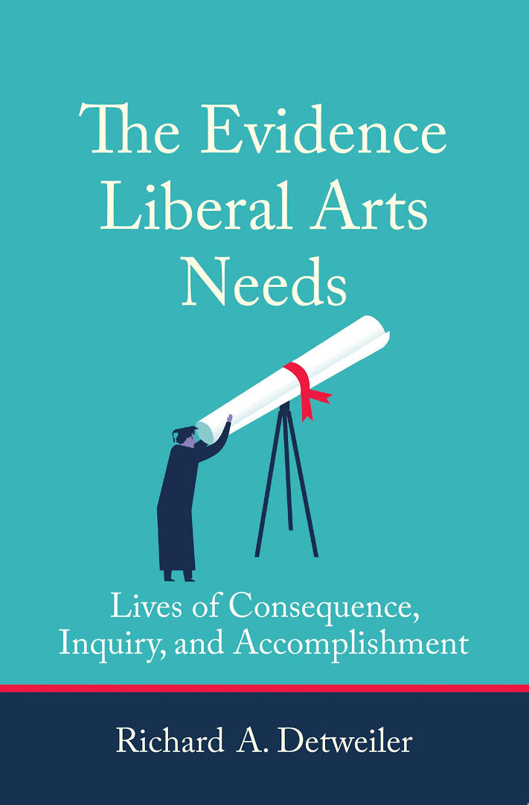

Career milestones
Helping higher education leaders and boards align operations and educational delivery with empirical evidence.
Led the consortium of 13 historic Midwestern liberal arts colleges; established the Global Liberal Arts Alliance spanning 30 institutions worldwide.
Pioneered technology integration and undergraduate experiential learning frameworks.
Led the Computer Initiative, making Drew the first liberal arts institution in the nation to provide personal computers to all incoming students.
The Evidence Liberal Arts Needs

Lives of Consequence, Inquiry, and Accomplishment (MIT Press, 2021)
Named by Forbes as one of the best higher education books of 2021, this book provides the first comprehensive empirical study examining how specific college experiences relate to leadership, civic involvement, continued learning, cultural involvement, fulfillment, and personal success decades after graduation.
Speaking & Advising
Rick speaks at colleges, universities, and conferences, and advises institutional leaders and boards on evidence-based educational strategies.
Detweiler@higheredimpact.org